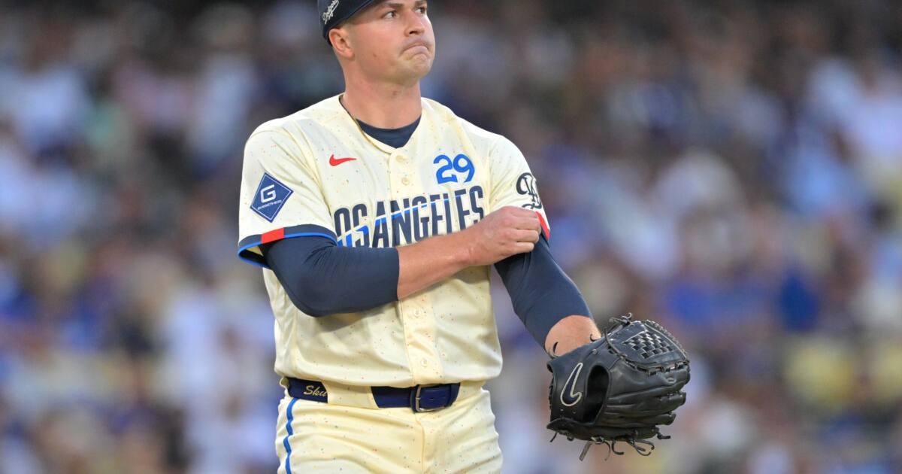

NLCS Game 1 tonight: Dodgers at Brewers, 8 p.m. ET on FOX
Skubal vs. Misiorowski under the lights at American Family Field — a near coin-flip opener to a year-long-awaited NLCS rematch.

Disclosure: this post contains affiliate links. I earn a commission on qualifying purchases.
# NLCS Game 1 tonight: Dodgers at Brewers, 8 p.m. ET on FOX
Tonight is the rematch Milwaukee wanted. The 103-win Brewers host the Dodgers at 8 p.m. ET on FOX at American Family Field, a year after Los Angeles swept last season's NLCS.
The pitching matchup
The opener is a true ace-vs.-ace tilt:
Tarik Skubal: Dodgers; 12-7; 2.73
Jacob Misiorowski: Brewers; 16-5; 1.80
Misiorowski gets the ball for Milwaukee in front of the home crowd; Skubal answers for Los Angeles.
The betting board
It's priced as close to a coin flip as October gets, per SI:
• Brewers: -113
• Dodgers: -107
• Total: 6
The storylines
• The rematch factor: Los Angeles swept last year's NLCS. Milwaukee has waited a full season for this.
• Regular season: The Brewers took four of the seven meetings between the clubs.
• Chourio's October: Jackson Chourio set the Milwaukee franchise mark with 17 postseason RBIs — the lineup's engine heading into the series.
The full seven-game slate is laid out by USA Today.
Watch
Source: "Dodgers vs. Brewers NLCS Preview: NL titans get their rematch" — MLB. The official preview frames the rematch storyline, the pitching matchups, and what's at stake — a trip back to the World Series for the Dodgers or Milwaukee's first pennant.
Gear up: Fanatics